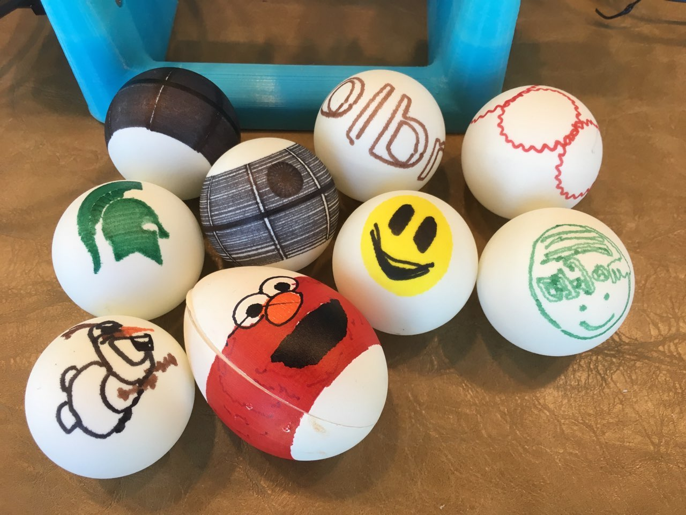
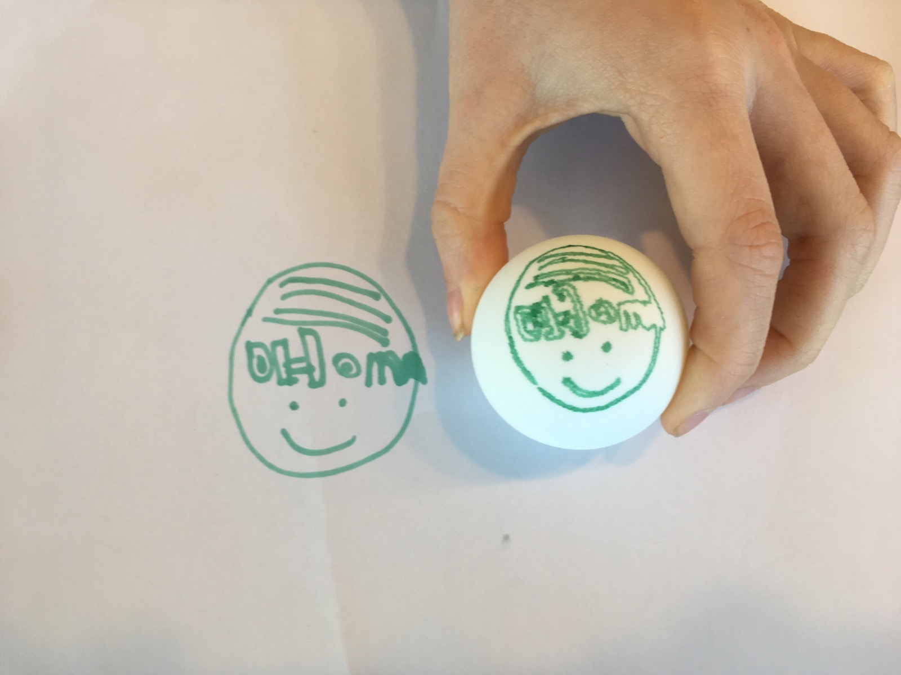
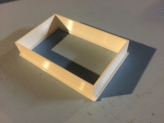
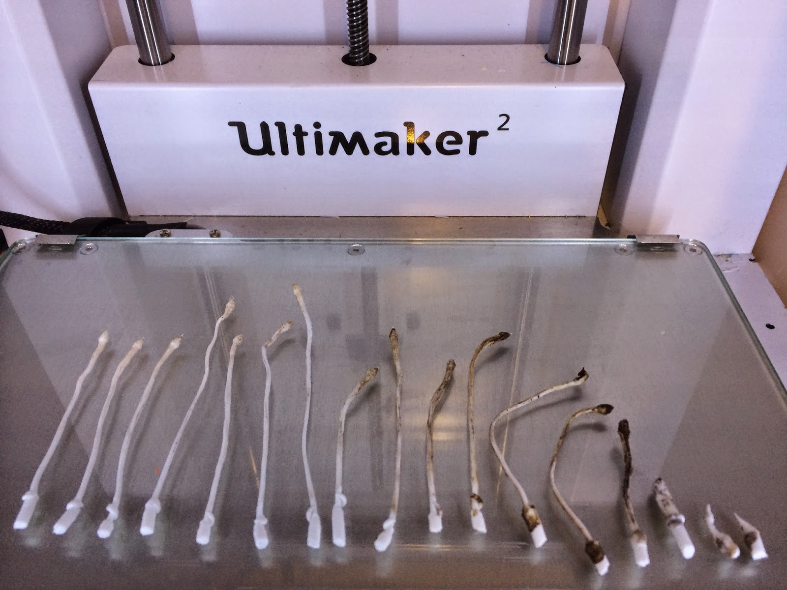
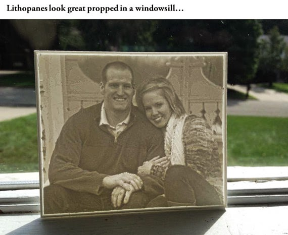

Sphere-O-Bot (JJRobots version)
Sat 13 April 2019 by Dr. Dirk Colbry
So, the Sphere-O-Bot was my first (and so far only) JJRobots project a few years ago (when I didn't have a blog). My 3D printer was not in the best shape but I was able to get everything assembled and working.
I dug out the Sphere-O-bot this week and after some trial and error I got it back up and running just in time for the Easter Holiday. One of the tricky parts was getting the software to work on an old windows 8 surface we had laying around. The software has three components:
- Arduino Leonardo Arduino drivers
- Inkscape Version 0.91 - Newer versions of Inkscape do not work.
- Eggbot Extention for Inkscape
Running the installers for the above is just the first step. I had a heck of a time getting the software to connect to the Arduino. It took a lot of googling and multiple problems on top of each other which made it tricky. One key thing I had to change was the following line in the
eggbot_scanwin32.py file:
hKey = _winreg.OpenKey( hReg, r"SYSTEM\CurrentControlSet\Enum\USB\VID_2341&PID_0043" )
Turns out the VID and PID are unique to my system. You can figure these numbers out by using the Arduino software and looking at the board specifications or you can look them up in the device manager. Kind of tricky.
Anyway, once we got it working it turns out to be extremely fun. I purchased a bunch of ping-pong balls online:
STIGA 2-Star White No Print Table Tennis Balls (144-Count) by Amazon.com
These are reasonably priced and work well for printing. We have already gone though and printed a bunch of designs we download from the internet.

I also had my daughter draw a picture and put it on an egg:

There are many steps to getting this to work but they are all fairly easy:
- Draw a picture with only one color (to start) on white paper.
- Open up the eggbot svg Inkscape template file from the examples directory.
- Take a picture with my phone and email it to me.
- Upload the picture into Inkscape.
- Run the trace bitmap function in the menu. This will take some fiddling to get only the parts of the image you want.
- Edit the resulting vectors as needed.
- Highlight the entire bitmap such that all of the points are selected.
- Run the object to path function in the menu.
- Run the Eggbot Extension and print as normal.
The above instructions are really just notes for myself the next time I want to do this activity with the kids. If anyone besides me is reading this blog, please feel free to put a comment below or drop me an email and I am happy to put together more detailed instructions for installation and/or printing a picture.
Alexa Dot Holder

My brother got me an Alexa Dot for Christmas a few years ago. It turns out to be a lot of fun. We put it in the kitchen and the kids play music. My wife and I also use it to add things to our shopping list (very convenient!) Anyway …
read more3D printed Switch Guard

We recently moved into a new house and the kids are having fun running around turning on and off all the lights. Unfortunately, some of the light switches are not for lights. One goes to our garbage disposal, another goes to the gas fireplace and another turns off the furnace …
read moreFarmBot
Intrducing a 3D printer to my daughter's Kindergarten class

We had fun showing off my 3D printer to the Kindergarten class. Although the printer is fun to watch, kids tend to get board with it in just a few minutes. I like to come up with classroom projects that let the kids use things that are printed with the …
read moreElectric box extender

I have been having trouble with my 3D printer over the last couple of months. It turns out that the fans got disconnected. Once I fixed the problem my printer is working better than ever. I was itching for something to print so I came up with this simple spacer …
read moreUltimaker 2, cleaning a clogged nozzle

So my Ultimaker2 extruding head got clogged, really bad. Something got jammed while printing and I could not get the filament to feed. This had happened once in the past when I tried using some really cheap filament but I am not sure the real root of the problem this …
read moreApril 1st Brownies
An oldie but a goodie with a modern twist. This year I printed out the letter E on my 3D printer using Brown PLA plastic.

Then I put the Brown E's in a baking pan:

Cover with aluminum foil and tell the kids I made brownies for them.

The were …
read more3D Cookie Cutter app comparison
My oldest daughter is in her second year of Brownies. My wife and I volunteered to lead a couple of their meetings with a maker theme. I thought the 3D printer is always a hit and what better project for girl scouts than cookies (yes I realize this is cliche …
read moreLithophanes

I saw my first 3D printer when I was visiting the University of Notre Dame. It was over 10 years ago, it was fairly expensive to operate and it printed in a kind of expensive wax.
Anyway, this was the first time I saw a lithophane. It was a picture …
read more